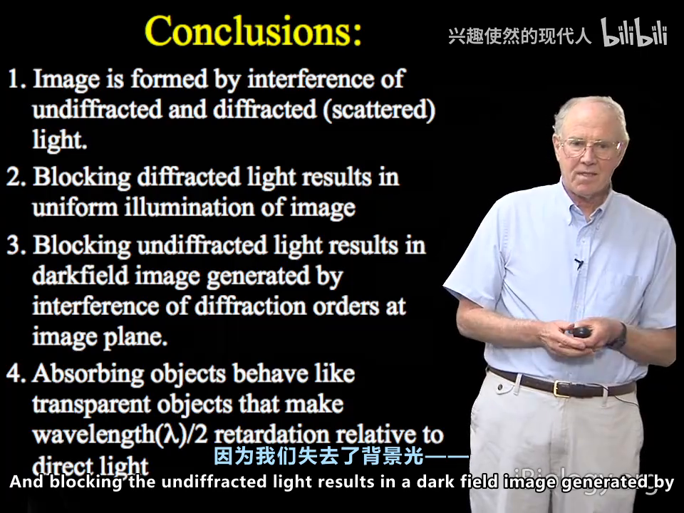
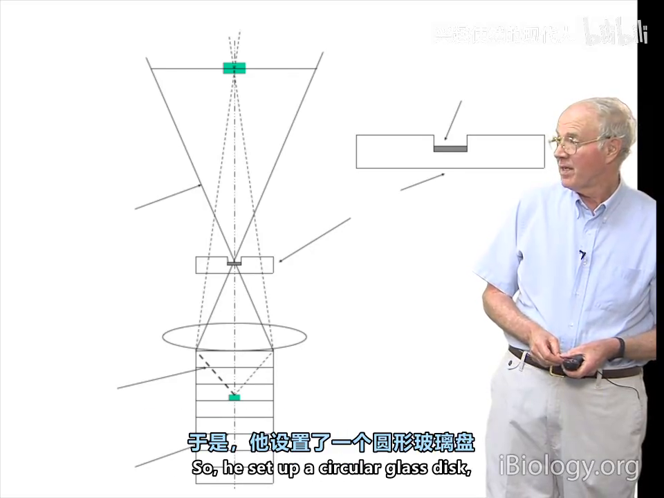
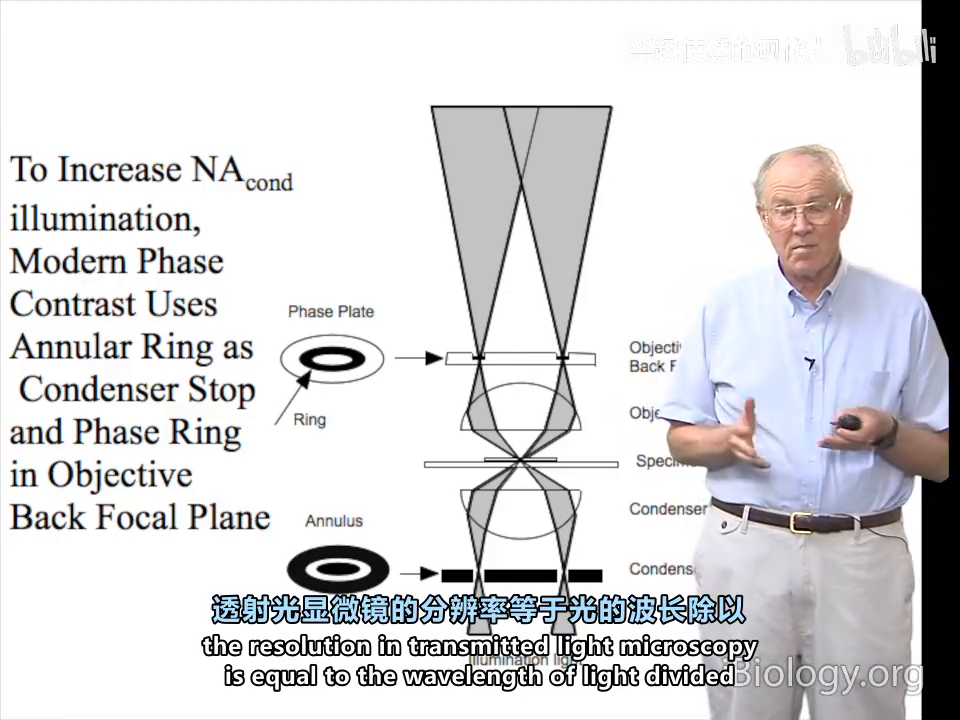
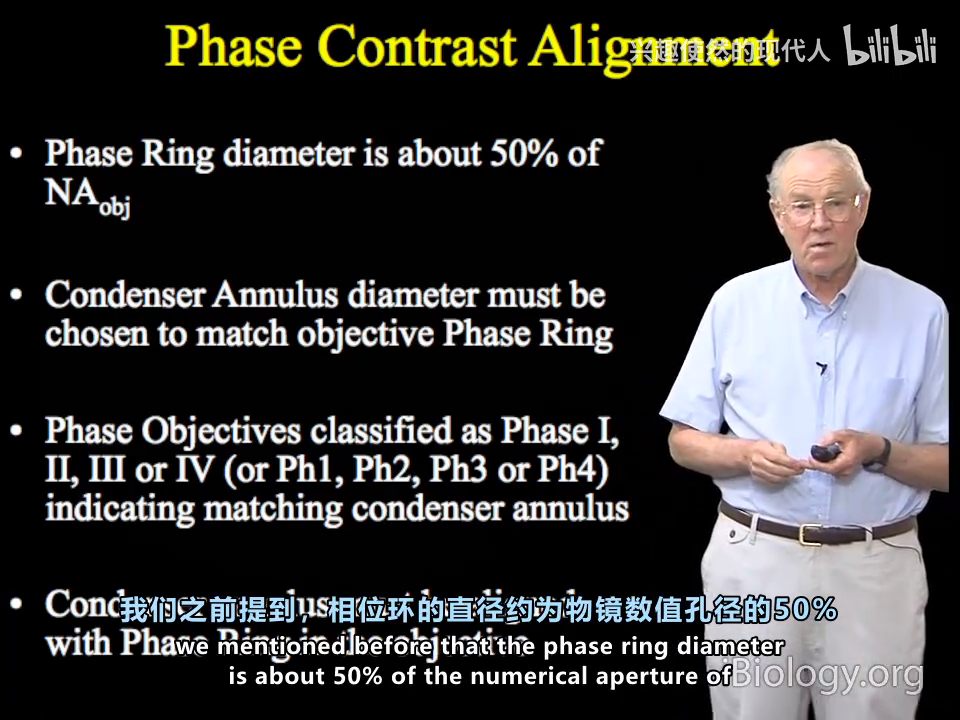
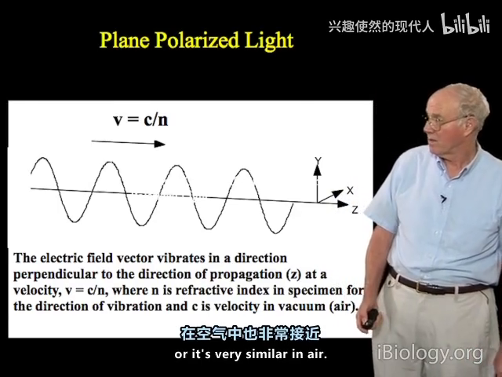
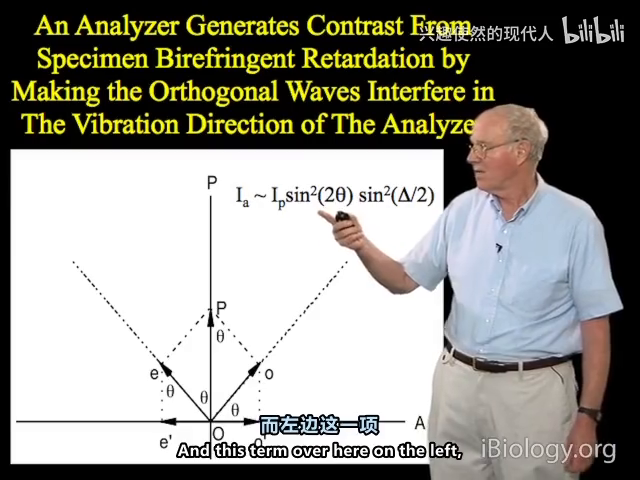
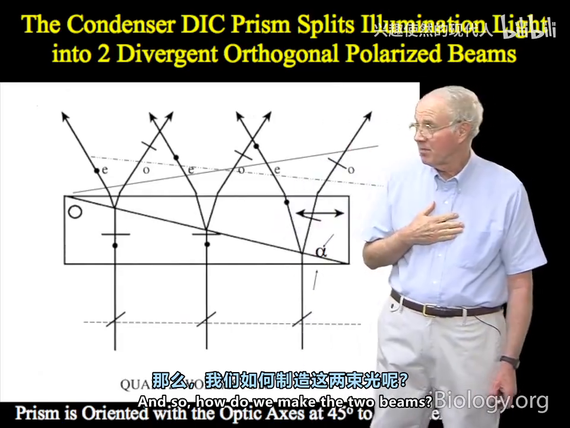
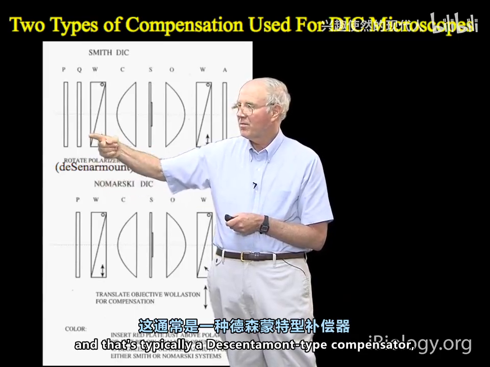
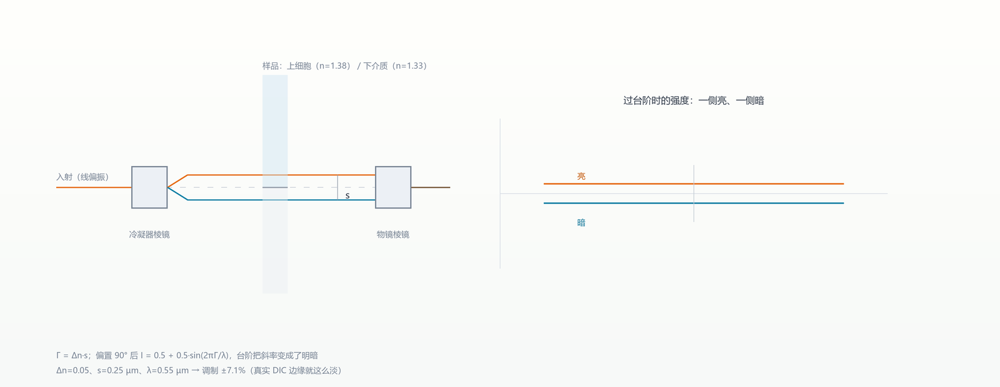

07 对比度四法：让透明的东西现形
一句话：透明样品只改相位、不改振幅，明场下自然"看不见"；暗场、相差、偏振、DIC 是四种把相位/偏振信息翻译成明暗的办法。
7.1 问题的起点：成像本来就是"干涉"
Edward Salmon（UNC）在暗场/相差这一讲结尾给了四条结论，第一条就把事情说透了：
像是"未衍射光"与"衍射（散射）光"干涉的结果。
挡住衍射光 → 均匀照明、看不到结构；挡住未衍射光 → 暗场，只剩下衍射级次在像面干涉。透明样品之所以看不见，是因为它只让衍射光"晚到"一点点，两束光叠起来强度几乎没变。

7.2 暗场：只收散射光
在聚光镜里放一块中心挡板，挡掉零级直射光，只让被样品散射的光进入物镜。背景全黑，颗粒像星星一样亮。
- 灵敏度极高（可看到 2.5 nm 级颗粒）；
- 但没有相位信息，厚样品的散射会把细节淹没。
7.3 相差：把 1/4 波长再挪 1/4
泽尼克的办法：在物镜后焦面放一块相位板，让零级直射光再滞后 1/4λ。原本衍射光比零级落后 1/4λ，合起来就变成 1/2λ（180°）——相位差被翻译成强度差。



7.4 偏振：只对双折射有反应
起偏器 + 正交检偏器 = 消光位，空场全黑。只有各向异性/双折射样品才会让光"转个角度"透过来。

- 双折射 B = n_e − n_o：纺锤体约 0.0005，方解石 0.17；
- 光程差 Γ = (n_e − n_o)·d，强度 ∝ sin²2θ · sin²(Γ/2)，θ=45° 时最亮。

这也是四种模式里唯一可定量的（补偿器读数）。
7.5 DIC：把"斜率"画成明暗
DIC 用两块 Wollaston 棱镜：
- 聚光镜侧的棱镜把一束线偏振光劈成两束正交偏振、错开一个剪切量（约为艾里斑半径的 1/2–2/3）；
- 两束光过样品时经历不同的光程差；
- 物镜侧的共轭棱镜把它们合回一束、干涉；
- 加 λ/4 波片（de Sénarmont）给约 90° 偏置 → 灰底，一侧变亮、一侧变暗。



伪 3D 的阴影感就来自"剪切方向固定"：一侧边缘加偏置、另一侧减偏置，于是把斜率编码成了明暗。这也是为什么转个方向，同一结构可能就"消失"了。
7.6 怎么选
| 需求 | 选什么 | 代价 |
|---|---|---|
| 看极弱散射颗粒 | 暗场 | 无相位信息，厚样品散射淹没细节 |
| 快速看活细胞形态、要量化 | 相差 | 有光晕、无立体感 |
| 双折射/有序结构（纺锤体、淀粉粒） | 偏振 | 只有各向异性有信号，怕应力 |
| 厚样品、要立体感与薄光切 | DIC | 只对剪切方向有对比 |
本章自测
- 相差显微镜里，相位板为什么要把零级光再滞后 90°？如果不加会怎样？
- DIC 的"伪 3D"是怎么产生的？为什么转 90° 后同一结构可能消失？
- 偏振模式为什么是四种里唯一可定量的？
回看：P23（34:15）、P25（27:41）、P26（37:24）、P29（12:40）。